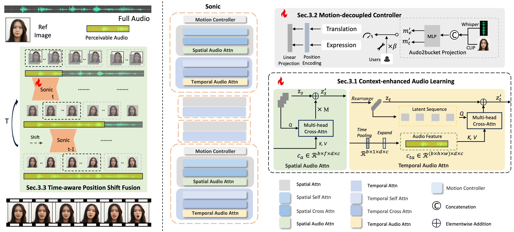

Sonic: Shifting Focus to Global Audio Perception in Portrait Animation
1Tencent,
2Zhejiang University
TL;DR: We propose a novel paradigm, dubbed as Sonic, to shift focus on the exploration of global audio perception. To effectively leverage global audio knowledge, we disentangle it into intra- and inter-clip audio perception and collaborate with both aspects to enhance overall perception. For the intra-clip audio perception, 1). Context-enhanced audio learning, in which long-range intra-clip temporal audio knowledge is extracted to provide facial expression and lip motion priors implicitly expressed as the tone and speed of speech. 2). Motion-decoupled controller, in which the motion of the head and expression movement are disentangled and independently controlled by intra-audio clips. Most importantly, for inter-clip audio perception, as a bridge to connect the intra-clips to achieve the global perception, Time-aware position shift fusion, in which the global inter-clip audio information is considered and fused for long-audio inference via through consecutively time-aware shifted windows.
